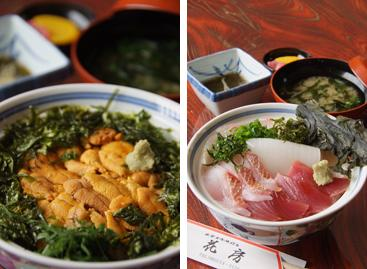

出雲日御碕灯台は、100年以上の歴史をもつ高さ約44メートルの白い塔で、 その高さは石造りの灯台としては日本一の高さを誇ります。人が簡単には近づくことができないため、 この地特有の自然環境が広い範囲で手つかずのまま残っています。
鮮やかな朱色に彩られている日御碕神社の社殿の1つ「日沉宮（ひしずみのみや）」には、 天照大御神が祀られており、夕日を象徴する社殿とされています。
毎月8月7日に行われる御幸（みゆき）神事は夕日の祭りとも言われ、 日本海に沈む美しい夕日を背景に、社殿や経島で行われる神事を見学することができます。
日御碕に行ったら食べに行ってほしい店は花房です。ぜひ海鮮を楽しんでください。
